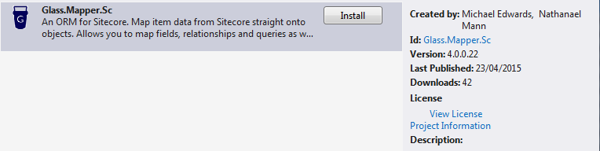

Upgrading To V4
This page will guide you through the process of upgrading your solution from V3 to V4 of Glass.Mapper.Sc. The instructions are broken down into two sections, the first covers upgrading a Web Project that contains the Windsor Project, config files and startup classes. The second is a class library that is used by a Web Project.
With the upgrade notes we have made assumptions about how each project is setup, if your project is setup in a non-standard way then these steps may not work.
Upgrading a Web Project
These steps are designed to demonstrate how to upgrade a web project to Glass.Mapper.Sc V4. The web project is the project that contains the Web.config, includes and other files that are physically deployed to the website root of your live solution.
Open the Nuget Package Manager and remove the existing Glass.Mapper packages:
- Glass.Mapper.Sc.Mvc-x
- Glass.Mapper.Sc.CastleWindsor
- Glass.Mapper.Sc
- Glass.Mapper
If you have modified any of the project files that w ere installed by Glass these won't be removed. This is expected, leave these for now.
In the Nuget Package Manager search for Glass.Mapper.Sc and install version 4. Glass.Mapper.SC V4 Nuget Package 
As the Nuget package installs you maybe prompted to overwrite the following files, is you are select no:
- GlassMapperSc.cs
- GlassMapperScCustom.cs
- Glass.Mapper.Sc.Start.config
Delete the following files:
- /App_Config/Include/Glass.Mapper.Sc.CastleWindsor.config
- /App_Config/Include/Glass.Mapper.Sc.Mvc.config
Next you need to compare each of the files list in step 4 and merge your changes with the new changes in V4. For most solutions you should only need to do GlassMapperScCustom.cs which we will talk about here.
The CastleConfig method has been removed and merged with the CreateResolver method:
public static IDependencyResolver CreateResolver()Copy and paste the method from the GitHub source into your class. You will need to remove the existing CreateResolver method. If you were using the out of the box Castle.Windsor resolver for Glass you can just delete the method. If you were using your own Dependency Resolver you will need to implement your own custom factories for the new resolver (more about this later).
You now need to start moving any changes in the CastleConfig method to the CreateResolver method. Start by moving configuration settings. This should be very straight forward.
Next comes any custom task or data mapper registrations, for example a data mapper in V3 would have been registered as follows:
container.Register( Component.For<AbstractDataMapper>().ImplementedBy<MyFieldMapper>().LifestyleCustom<NoTrackLifestyleManager>(), );This now becomes:
var resolver = new DependencyResolver(config); resolver.DataMapperFactory.Insert(0,() = > new MyFieldMapper()); return resolver;Make sure that you add the mapping between the instantiation of the DependencyResovler and before the return. If you have tasks for the different pipelines you should also add these tasks to the appropriate pipeline factory.
Remove the namespaces Castle.Windsor and Glass.Mapper.Sc.CastleWindsor from the top of the file.
Finally copy and paste the AddMaps method into GlassMapperScCustom.
You should now be ready to build and deploy your Sitecore solution. When you deploy your solution remember to delete the files detailed in step 5 and also remove the assemblies:
- Castle.Windsor
- Glass.Mapper.Sc.CastleWindsor
Upgrading a Class Library
- Open the Nuget Package Manager and remove the existing Glass.Mapper packages:
- Glass.Mapper.Sc.Mvc-x
- Glass.Mapper.Sc.CastleWindsor
- Glass.Mapper.Sc
- Glass.Mapper
- In the Nuget Package Manager search for Glass.Mapper.Sc and install version 4.
- Delete the folders App_Config and App_Start
Keeping Castle Windsor
The Glass Castle Windsor assemblies have now been remove from the Glass code base and no new nuget packages will be created. We recommend that you remove the Glass.Mapper.Sc.CastleWindsor assemblies and use the internal Glass DI solution.
Become a Glass Mapper Expert
The easiest way to become a Glass.Mapper.Sc EXPERT is by taking the V5 Training course!
The training course contains 64+ lectures which take you from the basics of Glass.Mapper.Sc to advanced features like template enforcement, type inferring and more.


Glass is home to the #1 ORM for Sitecore. Glass.Mapper is the easiest way to map data from your Sitecore solution to your code.
Sponsored by
Useful Links
Contact Us
Email: hello@glass.lu
M C Edwards Ltd trading as Glass
Company No.:08641300